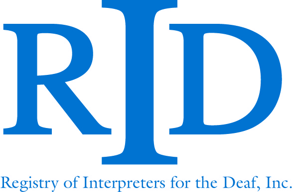
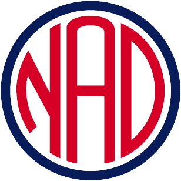
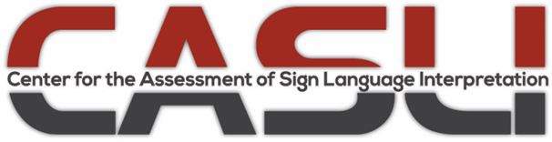
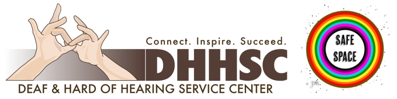

Resources
Explore these valuable resources to learn more about American Sign Language, interpreting, and the Deaf community.

Registry of Interpreters for the Deaf (RID)
Professional organization for ASL interpreters, offering certification and ethics guidelines.

National Association of the Deaf (NAD)
Advocates for Deaf rights and provides resources on ASL and accessibility.
Gallaudet University
Leading university for Deaf education, offering ASL courses and cultural insights.

Center for Assessment of Sign Language Interpretation (CASLI)
Provides certification testing for ASL interpreters, including NIC and CDI exams.

Deaf and Hard of Hearing Service Center (DHHSC)
Provides interpreting services, advocacy, and community support in Central California.